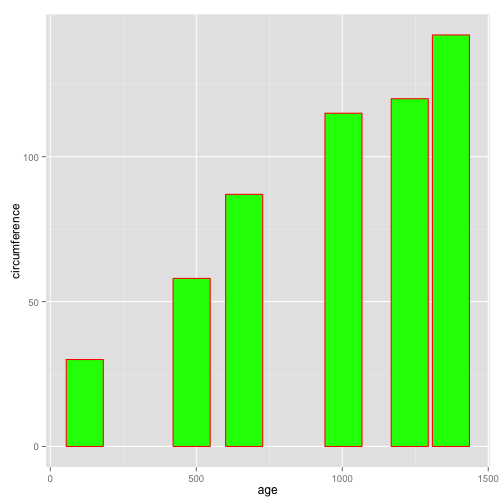

- This presentation is about the Growth of Orange Tree
- Takes a selected input for a tree and displays the circumference based on the age
- By changing the age range using a slider changes the circumference for any selected tree.
Pratheebha
The Orange data set contains data about the Orange trees, their age and circumference.
library(datasets)
data(Orange)
summary(Orange)
## Tree age circumference
## 3:7 Min. : 118.0 Min. : 30.0
## 1:7 1st Qu.: 484.0 1st Qu.: 65.5
## 5:7 Median :1004.0 Median :115.0
## 2:7 Mean : 922.1 Mean :115.9
## 4:7 3rd Qu.:1372.0 3rd Qu.:161.5
## Max. :1582.0 Max. :214.0
dim(Orange)
## [1] 35 3
In the below code snippet we have created some shiny widgets like an input text dropbox to select the choice of Orange tree by the tree number given, a selected tree displays the age and circumference related to that Tree.
Also craeted a slider with ageRange as an input and takes in the paraments age as well as circumference and outputs a barplot
displaying the change in circumference with age for a selected tree.
inputPanel( selectInput("Tree", label = "Tree Number", choices = c(1, 2, 3, 4, 5), selected = 1),
sliderInput("ageRange", label = "Age of Orange Tree:", min = 100, max = 1600, value = c(100, 1600), step = 0.2) )
Using the input from the slider and tree selection widget, we plot a bar plot.See below and example/plot.

Refernces To see a full working demo of the project go to https://pratheebha-lakshminarayanan78.shinyapps.io/demo
Complete code and additional documentation can be found at https://github.com/pratheebha/Developing-Data-Products